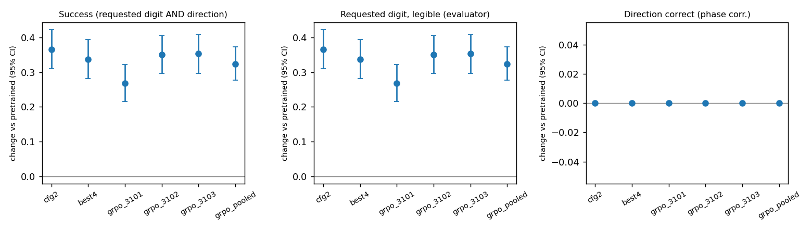
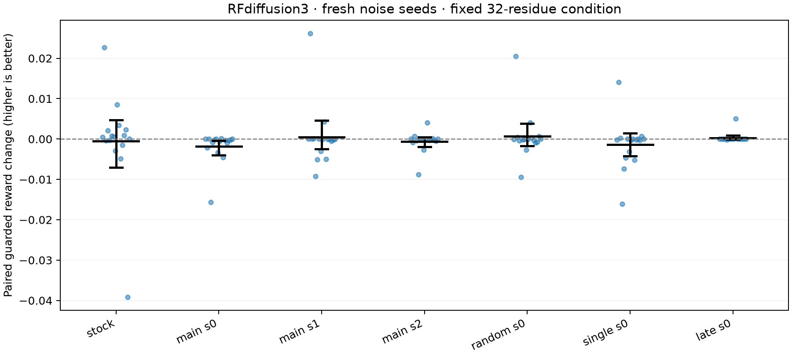

What GRPO does to diffusion models
Group-relative policy optimisation applied to a video model, RFdiffusion3 and a CIFAR-10 image model on one 16 GB laptop. Every number is measured on fresh seeds by an evaluator that the training reward never saw.
3 seeds, 95% CI +27.7 to +37.3
9 runs, every CI spans zero
than on an independent classifier
The short version. GRPO is a strong optimiser for diffusion models, and what it delivers is set almost entirely by the reward. With a reward that pays for exactly what you want, it improved a video model by 32 points and lifted every class it was asked to draw. With a reward that has a shortcut, it finds the shortcut. With a reward the base model already satisfies, it has nothing to do.
The method in one paragraph
A stochastic sampler (DDIM with η = 1, or DDPM) turns each denoising step into a Gaussian action with an exact log-probability. GRPO samples a group of outputs for the same prompt, scores them, and normalises each reward against its own group. It then takes clipped policy-gradient steps on the per-step log-probabilities, with a KL penalty that anchors the policy to the pretrained model. These are densities of the sampler's transitions, not likelihoods of the final sample, and that is all a policy gradient needs.
Each experiment holds out an independent evaluator: a different classifier trained on disjoint data, or a separate geometric measure. Every comparison is paired. Each method starts from identical noise on the same test prompts, so differences are clip-for-clip.
1. Video: +32 points, and every digit improves
The model
I trained a video diffusion model from scratch: a 1.7M-parameter factorised space-time UNet, with per-frame 2D convolutions and per-pixel temporal convolutions. The data are freshly generated Moving-MNIST clips of 8 frames at 32×32. Each clip is one handwritten digit sliding in one of eight directions. The model is conditioned on two things, a direction and a digit, so a prompt reads "draw a 3 moving down-left". It trained for 12,000 steps, about three hours on the laptop, with classifier-free-guidance dropout on both labels.
Before any RL, the model had to pass a predeclared gate: draw the requested digit at least 40% of the time. At 8,000 steps it reached 36%, so I continued the same run to 12,000 steps and repeated the identical gate. It then reached 47.5%, and its clips moved in the requested direction 100% of the time. Both checks are recorded in the study's protocol.
Why the model is told which digit to draw
A first version of this experiment conditioned only on direction. The reward paid for correct motion and for "a legible digit". GRPO raised the independent success rate by 11.7 points, but it did so by drawing many more 8s: 109 to 150 of 256 test clips, against 64 before training. A loopy, high-contrast 8 is the easiest shape to call legible. Take the 8s out and the gain fell to 0–5 points.
The fix was to change what the reward pays for. The model now receives the digit as part of the prompt, and the reward only pays for that digit. Drawing an 8 when asked for a 3 now lowers the score.
The setup
- Policy
- The model's own DDIM sampler, η = 1, 40 steps. Every step is a Gaussian action with an exact log-probability.
- Reward
- 0.4 × a small CNN's probability of the requested digit, plus 0.6 × motion score (centroid direction × speed match). Multiplied by an ink guard that zeroes blank or saturated clips.
- Evaluator
- A second, different CNN trained on the other half of MNIST, plus a phase-correlation motion estimate. Neither shares code or data with the reward.
- Success
- The evaluator reads a legible digit, it is the requested digit, and it moves in the requested direction.
- Training
- 150 GRPO updates per seed, 4 prompts × 8 samples each, clipped ratios, KL to the pretrained model. Three seeds, about one hour each.
- Test
- 320 clips: 4 for each of the 80 direction × digit prompts, with identical starting noise for every method.
Results
| Method | Success | Δ vs pretrained (95% CI) | Worst digit |
|---|---|---|---|
| Pretrained | 49.1% | n/a | 34% |
| GRPO, seed 1 | 75.9% | +26.9 (+21.6, +32.2) | 53% |
| GRPO, seed 2 | 84.1% | +35.0 (+29.7, +40.6) | 69% |
| GRPO, seed 3 | 84.4% | +35.3 (+29.7, +40.9) | 72% |
| GRPO, 3 seeds pooled | 81.5% | +32.4 (+27.7, +37.3) | n/a |
| Best-of-4 sampling (4× cost) | 82.8% | +33.8 (+28.1, +39.4) | 56% |
| Guidance, w = 2 (2× cost) | 85.6% | +36.6 (+30.9, +42.2) | 75% |
All three seeds improved by 27 to 35 points. GRPO matches best-of-4 sampling while sampling at a quarter of the cost. Two of the three seeds land within two points of classifier-free guidance, which needs two network evaluations per step. Motion stayed perfect: 100% of clips moved the requested way before and after.

No shortcut this time
Every requested digit improved. The weakest digit went from 34% to between 53% and 72%, depending on the seed. The pretrained model also had a bias of its own: asked for 32 of each digit, it drew 68 clips the evaluator read as 8s. After GRPO that count was 28, 38 and 31, close to the requested 32. GRPO removed the 8 bias instead of exploiting it.


What it cost
Variety between clips for the same prompt fell from 0.47 to between 0.37 and 0.41 (mean pixel distance between clips for the same prompt), as is usual for KL-regularised RL on generators. Smoothed training reward climbed from 0.70–0.76 to 0.85–0.90 in every seed. One seed had a short dip near update 135 that recovered by update 150.

2. Proteins: RFdiffusion3 doesn't move
I fine-tuned the real, pinned RFdiffusion3 checkpoint (168M parameters, kept frozen) through a small low-rank adapter on its final coordinate-update layer. The policy was a stochastic version of RFD3's own sampler with explicit Gaussian actions and exact per-step densities. The reward favoured compact, well-bonded, clash-free backbones: −Rg/10 − 2·bond MAE − 10·clash fraction.
First study. Three GRPO seeds plus three controls (random advantages, a single-expert adapter, and late-noise-only actions), tested on 288 fresh backbones:
| Design length | Fresh backbones | Mean reward change (GRPO − untrained) |
|---|---|---|
| 24 residues | 72 | −0.00098 |
| 32 residues | 144 | −0.00063 |
| 40 residues | 72 | −0.00034 |
Second attempt. In the first study, actions moved only the Cα atoms, and RFD3's frozen denoiser pulled the rest of each residue back into place, undoing the action. So I let actions move every free atom, raised the learning rate from 3e-4 to 1e-3, concentrated actions on the low-noise range σ ∈ [0, 4] (the first study used [0.5, 32]), and trained for 60 epochs. Each seed was tested on 16 fresh paired designs:
| Seed | Actions on | Reward change | 95% CI |
|---|---|---|---|
| 11 | Cα only, lr 3e-3 | +0.0005 | −0.0001, +0.0014 |
| 21 | all atoms, lr 1e-3 | +0.0006 | −0.0001, +0.0013 |
| 22 | all atoms, lr 1e-3 | −0.0000 | −0.0008, +0.0006 |
Every backbone in every run passed the geometry checks, and no change was distinguishable from zero. A separate benchmark, refilling an 8-residue gap in crambin (PDB 1CRN), gave the same answer: a mean paired change of 0.00000005 in reward and 0.00002 Å in RMSD to the native structure.

3. Images: the reward rises, the independent score barely moves
On Google's pretrained CIFAR-10 DDPM, I used GRPO to make generated images more frog-like. The reward was one CIFAR classifier's frog probability. The independent judge was a second classifier trained on disjoint CIFAR data.
| Measure | Change after GRPO (3 seeds) |
|---|---|
| Training classifier's frog probability | +0.056 |
| Independent classifier's frog probability | +0.009 |
GRPO raised the reward six times more than the independent score. It learned what that particular classifier responds to, not what makes an image look more like a frog. With a weaker reward classifier (46% accurate), both scores stayed flat.

4. A real text-to-video model fits, barely
As a feasibility check, I ran GRPO on ZeroScope, a pretrained text-to-video diffusion model. The U-Net stayed frozen; a small output residual was trained, with eight frames and the prompt "A single red ball rolls from left to right across a plain floor." One optimiser update fit in 16 GB. On two fresh paired seeds the reward change was +0.040 and −0.011. The model rendered several red spheres instead of one ball. This shows the machinery runs end to end on a laptop. It is not a result, and scaling it up needs more memory than this machine has.
What ties it together
| Domain | Reward went up? | Independent measure went up? | Why |
|---|---|---|---|
| Video, digit-conditioned | Yes, 0.78 → 0.91 | Yes, +32.4 points | Reward pays for exactly the target |
| Video, first version | Yes, 0.61 → 0.92 | +11.7, mostly 8s | Reward had a shortcut |
| Proteins (RFdiffusion3) | No | No | Base model already satisfies the reward |
| Images (CIFAR-10 DDPM) | Yes, +0.056 | Barely, +0.009 | Exploited the reward classifier |
The same machinery ran in every domain: a stochastic sampler, group-relative advantages, clipped ratios and a KL anchor. It worked in all of them as an optimiser. Whether that optimisation became improvement was decided by the reward.
- Give it a reward with a shortcut, and it finds the shortcut.
- Give it a reward the base model already satisfies, and it has nothing to do.
- Give it a reward that pays for exactly the target, and it delivers: +32 points, every class improved, at 1× sampling cost.